卓榮泰說風涼話沒錢勘災…2016台南維冠大樓倒塌，張善政不分黨派挹注資源
Posts
卓榮泰說風涼話沒錢勘災…2016台南維冠大樓倒塌，張善政不分黨派挹注資源
卓榮泰說風涼話沒錢勘災…2016台南維冠大樓倒塌，張善政不分黨派挹注資源

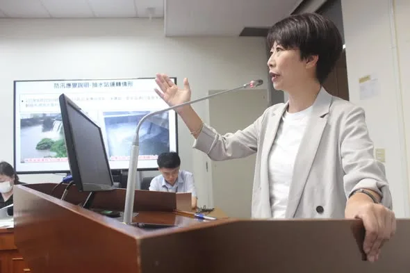
不要讓政治口水延誤治水預算！亭妃強勢爭取台南關鍵防洪工程，要求明年汛期前全面到位！ 台南連日暴雨突破 1,000 毫米！雖然歷年的治水預算有發揮作用，讓淹水面積大幅縮小，但面對極端氣候，治水預算一刻都不能等。昨天賴清德總統已實地赴台南會勘指示全力支援，亭妃今天也提出質詢，要求中央迅速核定預算，切勿讓政治口水延誤治水時程！ 為了徹底解決淹水瓶頸，亭妃積極爭取 9,500 萬元進行三爺溪延伸加高工程，並協調高公局借地設置永久抽水站，全面加強內水抽排。針對永康大灣地區，除了推動 1.5 億元崑大路箱涵工程，更特別感謝崑山科大無償提供 2,000 坪土地，打造地下滯洪、地上還原球場與停車場的立體化工程，創造校園與治水雙贏！另外大灣防汛道路底下箱涵的建置也是重中之重。 從小生長在淹水區的亭妃，深知大家面對暴雨的焦慮與痛苦，亭妃拜託相關單位不能讓政治口水延誤治水時程，現在南部治水要進入另外一個「區域治水」的階段，才能面對極端氣候的瞬間暴雨，給台南鄉親一個安全無虞的家！ #陳亭妃 #台南治水工程 #拒絕政治口水

農業部公告高雄市「#魚塭養殖」全品項納入救助範圍！陪漁民一起度難關！ 高雄市在三天內降下全年1/3雨量的超大豪雨，讓農漁產業都大受影響。今早陪同 賴清德 總統勘災時，我也當面向總統爭取高雄漁業災損救助。感謝中央以最快速度回應高雄漁民的需求，分別提供受此次豪雨影響的漁民 #現金救助 及 #低利貸款 申辦，申請資訊如下： 🔺申請項目：「魚塭養殖」全品項 🔺受理地區：高雄市全區 🔺申請期間：8月26日至9月8日（假日照常受理） 🔺辦理地點：所在地公所 #申報項目損失率達20%以上的漁民朋友，請備妥身分證、印章、存摺、土地相關證明等文件，向 #所在地公所 申辦。有低利貸款需求者，請於10個工作日內先申請受災證明，以利後續辦理。
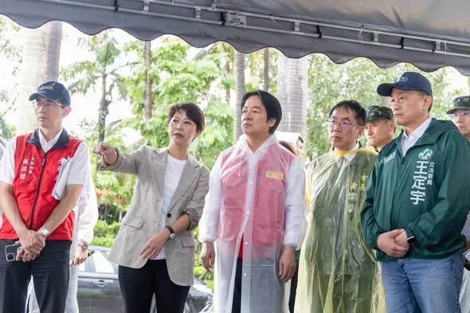
賴清德 總統今天下午從高雄又特地回到台南，來關心崑大路周邊這次豪雨造成的淹水問題。 這兩天亭妃一直和黃偉哲市長、水利局局長與所有的同仁一起尋找關鍵原因，謝謝賴建信次長、水利署、國土署給的寶貴意見，更謝謝崑山科技大學願意提供土地做滯洪池，讓市府依照現有用途重新做規劃設計，創造雙贏，也謝謝賴總統直接允諾預算，從箱涵、到滯洪池、抽水站的量能增大，要求水利署、國土署要全力配合。 極端氣候越來越頻繁，台南治水要面對另一個重大考驗，就是區域治水的概念，尋找更多滯洪空間，來抑制瞬間暴雨，一起把防洪安全做得更完整，守護台南每一個家庭。 #陳亭妃 #賴清德 #台南治水 #永康 #崑山科技大學 #防洪治水

陪指南宮走過火災，直到重建的那一天。 我在政大念書的時候，就常常到指南宮。這裡承載著我很多求學時期的回憶；成家之後，也常帶著太太、孩子和家人來走走、參拜。 我相信，對許多市民朋友和信眾來說，指南宮不只是一座廟宇，更是一份共同的記憶。每年的三獻大典是地方盛事，許多國內外宗教團體與重要人士也都會齊聚在這裡。指南宮更是臺北最具指標性的廟宇之一，也是全臺灣呂仙祖信仰的重鎮。 昨天發生火災，所幸沒有造成人員傷亡，是不幸中的大幸。消防局接獲通報後，第一時間投入救災，總計動員超過106人次、27輛消防車，也有義消夥伴及無人機隊共同協助掌握火勢，最終在凌晨12時09分將火勢撲滅。 我要再次感謝所有奮勇救災的消防弟兄及義消夥伴。 今天一早，我到現場和高超文主委、廟方及市府相關單位討論後，也做出幾項指示。 第一，臺北市政府立即成立跨局處府級單一窗口，由林奕華副市長督導、民政局主責，整合消防、文化、都發、建管、大地、區公所等單位，全力協助後續工作。 第二，待火災調查完成、確認符合安全規範後，立即進行鑑定。除了結構安全，也會與廟方、文化局共同確認具有歷史價值、應優先保存的結構，做好完整的鑑定與紀錄。 第三，市府會在符合安全標準的前提下，提供復原重建所需的專案行政協助，加速後續審查。無論是建築、土地、寺廟登記等不同層面，都由市府團隊全力協助。 我也向高超文主委表達，從今天開始，無論是現場清理、火災調查，還是後續復原重建，臺北市政府都會一路陪著指南宮，直到重建的那一天。
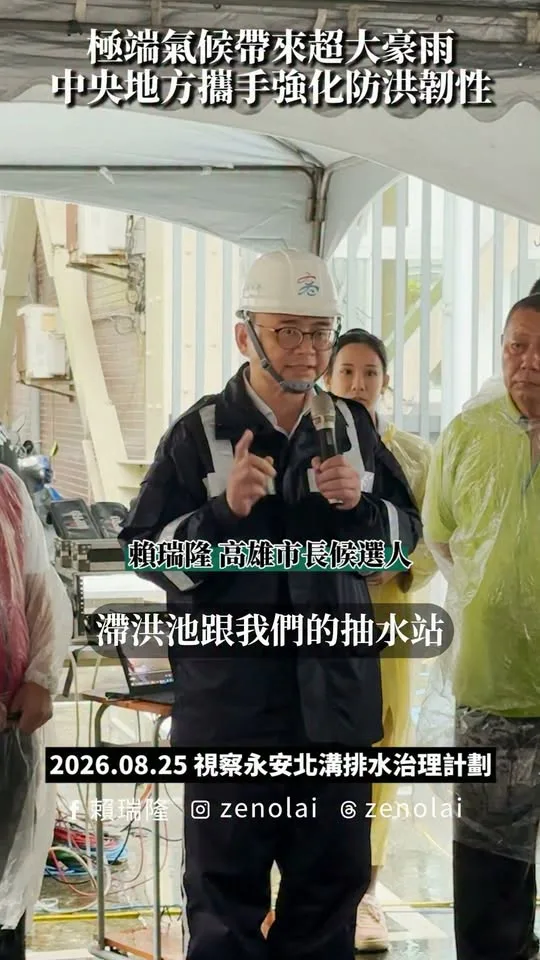
治水沒有終點，市民安全第一！
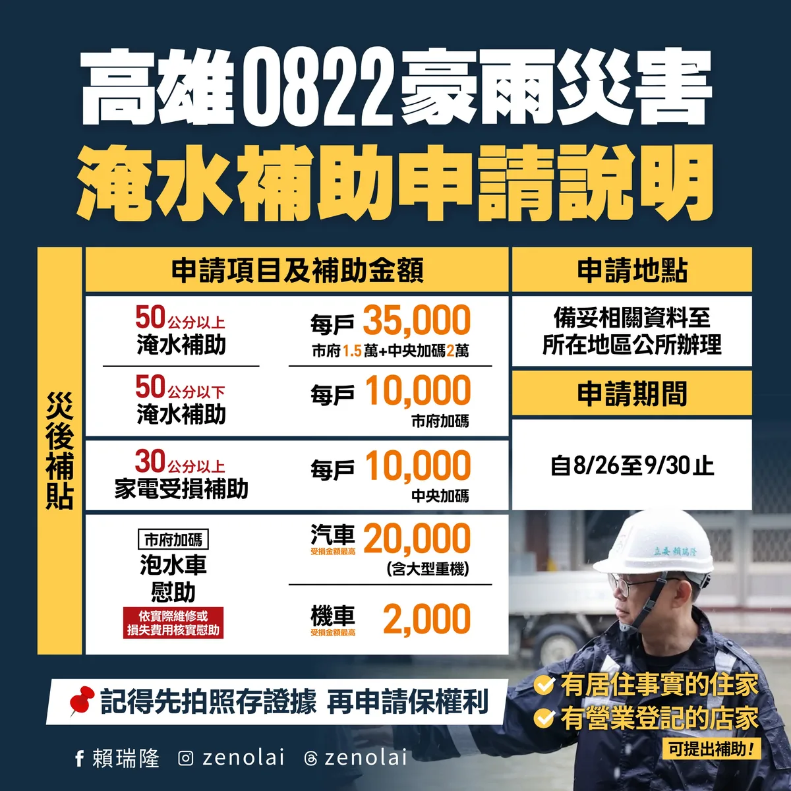
@zenolai:0822豪雨災損救助！高雄市各項補助和稅捐減免開放申請 連日豪雨，我們持續在第一線勘災，積極向中央爭取建設經費和災害補助，並以「從簡、從速、從寬」為原則，做市民最堅強的後盾。 高雄市政府已正式公告「0822豪雨災害」專案救助措施，包含淹水補助、泡水車慰助、漁業救助和各項稅捐減免。申請資訊如下： 🔺住家和營業場所淹水補助（含工廠） 淹水50公分以上：發放3.5萬元（市府1.5萬+中央加碼2萬） 淹水50公分以下：發放1萬元（市府加碼） 🔺家電受損補助 淹水30公分以上：發放1萬元（中央加碼，需附維修憑證或購買收據） 🔺汽機車泡水慰助 汽車受損：最高慰助2萬元（含大型重機） 機車受損：最高慰助2千元 🔺養殖漁業天然災害救助 養殖漁業全品項：提供現金救助和低利貸款（受理至9月8日止） 🔺稅捐減免 包含房屋稅、地價稅、使用牌照稅、娛樂稅、所得稅和營業稅等，依災損情形得申請減徵或免徵。 申請期間自8月26日至9月30日止。請有需要的市民朋友，備妥身分證、印章、存摺和相關證明文件，向所在地區公所或稅捐機關申辦。特別提醒大家，在清理環境前務必「先拍照存證」，以利後續辦理！

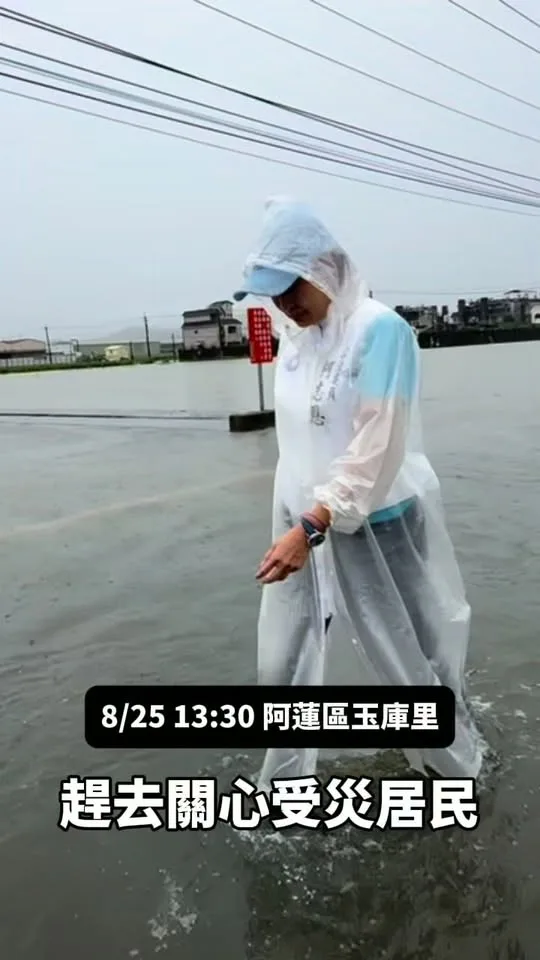
大雨滂沱，我依舊心繫鄉親。今天下午我趕往阿蓮區玉庫里，關心受災居民的災後復原狀況。
@zenolai:陪同賴總統視察北高雄！全力爭取防洪經費和漁業救助 治水沒有終點。今天上午，我陪同 @william_chingte 總統、 @chenchimai 市長前往岡山和永安，接連視察土庫排水流域和北溝排水治理計畫，實地了解地方居民的心聲，並檢視後續的改善方案。 感謝賴總統現場要求水利署，盡速審查市府提報的土庫滯洪池治理工程。我也當面向中央極力爭取各項水利設施的建設經費，包含持續增設滯洪池、強化抽水站、堤岸加高和渠道加強等防洪工程。未來我會從流域整體的角度出發，同步補強各項防洪設備，一項一項解決排水瓶頸，全面降低北高雄的積淹水風險。

卓榮泰說風涼話沒錢勘災…2016台南維冠大樓倒塌，張善政不分黨派挹注資源
【本集介紹】 📌 龍介開箱網友北真實業寄來的茶 📌 台南大淹水「三天淹四次」..水溝到底有沒有清？ 📌 勘災也扯預算...藍白砍預算卓榮泰沒辦法南下勘災？ 📌 回覆網友陳情：南科裡限速不合理... 📌 台南市安南區爆炸案3人羈押禁見 📌 賴清德台南勘災稱「淹水面積少99%請少批評」... #龍介直播 #謝龍介 #龍介仙 #台南 #台語
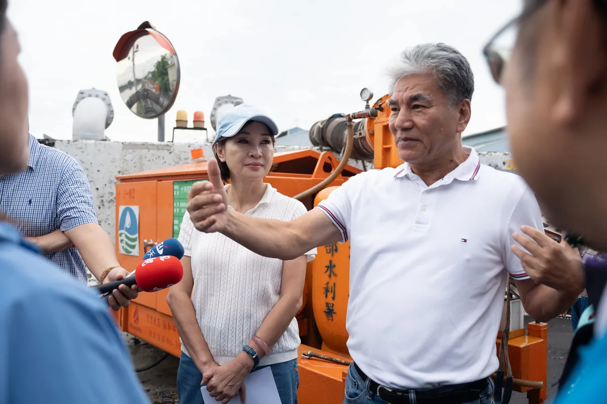
@prof.kochihen:治水不是只靠花錢，而是要找對問題、對症下藥。 這幾天，我走了高雄許多淹水地區。 看到鄉親一次又一次清理家園，我一直在想：除了勘災、協助復原，我們更應該直面問題：：「下一場大雨過後，是否能在最快時間恢復正常生活？」 今天特別邀請前內政部長、治水專家 李鴻源，我們一起到梓官典寶溪實地會勘，也和在地議員、里長及地方鄉親坐下來，共同檢視典寶溪長年以來的淹水問題。
畜牧產業救助措施公布，高雄全品項納入範圍 面對連日豪雨，我們持續掌握農漁牧產業狀況，並向中央反映地方需求、爭取相關協助，希望讓各項救助儘快到位，減輕畜牧業者的負擔。 農業部公布最新救助措施，高雄市全區「#畜牧全品項」納入8月下旬豪雨農業天然災害現金救助地區，除畜禽舍、堆肥舍外，其餘畜牧品項皆可依規定提出申請。申請資訊如下： 🔺申請項目：畜牧全品項（畜禽舍、堆肥舍除外） 🔺受理地區：高雄市全區 🔺申請期間：8月26日至9月9日（假日照常受理） 🔺辦理地點：所在地區公所 #畜牧業者朋友 請留意申請期限，備妥身分證、印章、存摺及相關證明文件，向所在地區公所申辦。
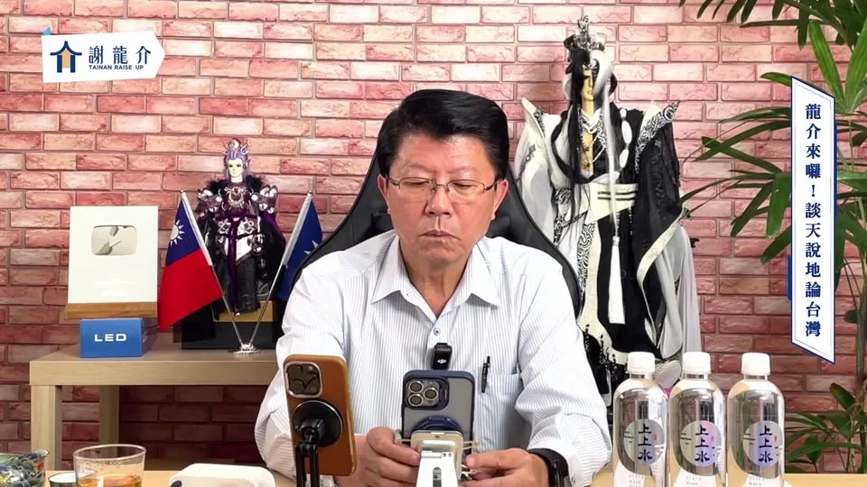
【本集介紹】 📌 龍介開箱網友北真實業寄來的茶 📌 台南大淹水「三天淹四次」..水溝到底有沒有清？ 📌 勘災也扯預算...藍白砍預算卓榮泰沒辦法南下勘災？ 📌 回覆網友陳情：南科裡限速不合理... 📌 台南市安南區爆炸案3人羈押禁見 支持龍介線上捐款：https://donate.newebpay.com/062268268/hsiehlungchieh115 龍介的 Tiktok 開放 Call in 👉 https://www.tiktok.com/@longuy1003/live 👉 Call in 步驟：請至 Tiktok 搜尋「謝龍介」並找到龍介的直播，直播畫面的下方申請「訪客連線」，龍介兄會隨機接通。
陪指南宮走過火災，直到重建的那一天。 我在政大念書的時候，就常常到指南宮。這裡承載著我很多求學時期的回憶；成家之後，也常帶著太太、孩子和家人來走走、參拜。 我相信，對許多市民朋友和信眾來說，指南宮不只是一座廟宇，更是一份共同的記憶。每年的三獻大典是地方盛事，許多國內外宗教團體與重要人士也都會齊聚在這裡。指南宮更是臺北最具指標性的廟宇之一，也是全臺灣呂仙祖信仰的重鎮。 昨天發生火災，所幸沒有造成人員傷亡，是不幸中的大幸。消防局接獲通報後，第一時間投入救災，總計動員超過106人次、27輛消防車，也有義消夥伴及無人機隊共同協助掌握火勢，最終在凌晨12時09分將火勢撲滅。 我要再次感謝所有奮勇救災的消防弟兄及義消夥伴。 今天一早，我到現場和高超文主委、廟方及市府相關單位討論後，也做出幾項指示。 第一，臺北市政府立即成立跨局處府級單一窗口，由林奕華副市長督導、民政局主責，整合消防、文化、都發、建管、大地、區公所等單位，全力協助後續工作。 第二，待火災調查完成、確認符合安全規範後，立即進行鑑定。除了結構安全，也會與廟方、文化局共同確認具有歷史價值、應優先保存的結構，做好完整的鑑定與紀錄。 第三，市府會在符合安全標準的前提下，提供復原重建所需的專案行政協助，加速後續審查。無論是建築、土地、寺廟登記等不同層面，都由市府團隊全力協助。 我也向高超文主委表達，從今天開始，無論是現場清理、火災調查，還是後續復原重建，臺北市政府都會一路陪著指南宮，直到重建的那一天。
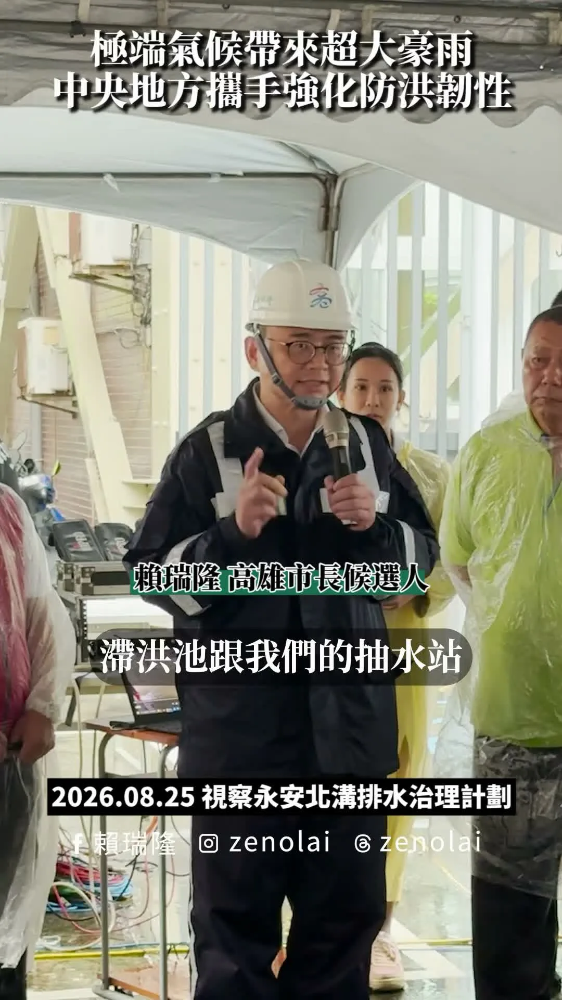
治水沒有終點，市民安全第一！
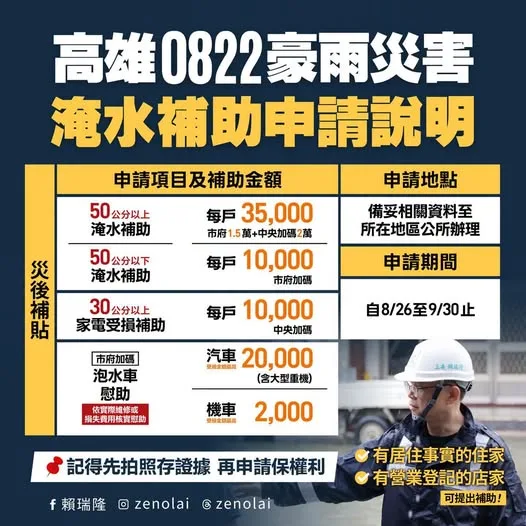
0822豪雨災損救助！高雄市各項補助和稅捐減免開放申請 連日豪雨，我們持續在第一線勘災，積極向中央爭取建設經費和災害補助，並以「從簡、從速、從寬」為原則，做市民最堅強的後盾。 高雄市政府已正式公告「0822豪雨災害」專案救助措施，包含淹水補助、泡水車慰助、漁業救助和各項稅捐減免。申請資訊如下： 🔺住家和營業場所淹水補助（含工廠） 淹水50公分以上：發放3.5萬元（市府1.5萬+中央加碼2萬） 淹水50公分以下：發放1萬元（市府加碼） 🔺家電受損補助 淹水30公分以上：發放1萬元（中央加碼，需附維修憑證或購買收據） 🔺汽機車泡水慰助 汽車受損：最高慰助2萬元（含大型重機） 機車受損：最高慰助2千元 🔺養殖漁業天然災害救助 養殖漁業全品項：提供現金救助和低利貸款（受理至9月8日止） 🔺稅捐減免 包含房屋稅、地價稅、使用牌照稅、娛樂稅、所得稅和營業稅等，依災損情形得申請減徵或免徵。 申請期間自8月26日至9月30日止。請有需要的市民朋友，備妥身分證、印章、存摺和相關證明文件，向所在地區公所或稅捐機關申辦。特別提醒大家，在清理環境前務必「先拍照存證」，以利後續辦理！
@zenolai:農業部公告高雄市「#魚塭養殖」全品相納入救助範圍！陪漁民一起度難關！ 高雄市在三天內降下全年1/3雨量的超大豪雨，讓農漁產業都大受影響。今早陪 @william_chingte 總統勘災時，我也當面向總統爭取高雄漁業災損救助。感謝中央以最快速度回應高雄漁民的需求，分別提供受此次豪雨影響的漁民 #現金救助 及 #低利貸款 申辦，申請資訊如下： 🔺申請項目：「魚塭養殖」全品項 🔺受理地區：高雄市全區 🔺申請期間：8月26日至9月8日（假日照常受理） 🔺辦理地點：所在地公所 #申報項目損失率達20%以上的漁民朋友，請備妥身分證、印章、存摺、土地相關證明等文件，向 #所在地公所 申辦。有低利貸款需求者，請於10個工作日內先申請受災證明，以利後續辦理。
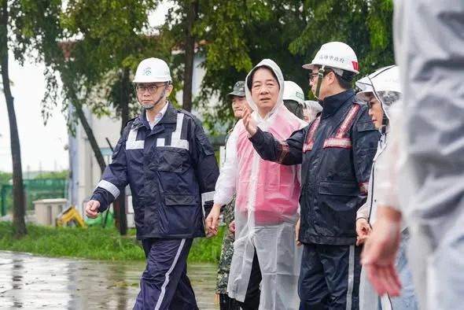
陪同賴總統視察北高雄！全力爭取防洪經費和漁業救助 治水沒有終點。今天上午，我陪同 賴清德 總統、陳其邁 Chen Chi-Mai 市長前往岡山和永安，接連視察土庫排水流域和北溝排水治理計畫，實地了解地方居民的心聲，並檢視後續的改善方案。 感謝賴總統現場要求水利署，盡速審查市府提報的土庫滯洪池治理工程。我也當面向中央極力爭取各項水利設施的建設經費，包含持續增設滯洪池、強化抽水站、堤岸加高和渠道加強等防洪工程。未來我會從流域整體的角度出發，同步補強各項防洪設備，一項一項解決排水瓶頸，全面降低北高雄的積淹水風險。 在視察過程中，我也向賴總統爭取高雄漁業災損救助。繼成功爭取到農產業全品項救助後，許多受災的漁民朋友也承受了極大壓力。我要求中央盡速啟動救助程序，必須同步提供「天然災害現金救助」和「無息貸款」，並以「從寬、從優、從速、從簡」為原則，全力協助大家盡快恢復生產。 因應沙德爾颱風持續逼近，中央與市府已提前調節各大滯洪池水位、預留滯洪空間。這幾天我也持續走訪各地、掌握水情與防汛整備，把市民安全放在第一位。請大家務必提高警覺、做好防颱準備，我也會持續與中央、市府密切合作，緊盯防汛工作，把地方需求化為具體建設，全力守護市民安全，做大家最堅強的後盾。

@hsiehlungchieh:卓榮泰說風涼話沒錢勘災…2016台南維冠大樓倒塌，張善政不分黨派挹注資源

說實在，新店、烏來的建設，我不是第一次做。 AI 廊道我推，烏來的水我顧。安坑輕軌已經在跑了。 大的我扛，小的我也顧。
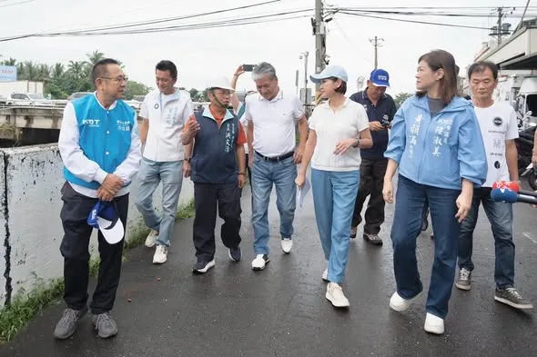
治水不是只靠花錢，而是要找對問題、對症下藥。 這幾天，我走了高雄許多淹水地區。看到鄉親一次又一次清理家園，我一直在想：除了勘災、協助復原，我們更應該直面問題：：「下一場大雨過後，是否能在最快時間恢復正常生活？」 今天特別邀請前內政部長、治水專家 #李鴻源，我們一起到 #梓官 #典寶溪 實地會勘，也和在地議員、里長及地方鄉親坐下來，共同檢視典寶溪長年以來的淹水問題。 高雄這些年投入不少治水經費，許多公園型滯洪池也發揮功能，這些成果都應該肯定。 然而，典寶溪的淹水問題延續近30年，至今仍未徹底解決，就代表我們更應該回到問題本身。 不用再「戰南北」，爭論誰拿的治水預算比較多。真正重要的是，錢有沒有「花在刀口上」，問題有沒有真正解決。 李鴻源部長今天也從專業角度提出，治水不能只看單一工程，應從整個流域重新檢視。從上游水量、中游河道及分流，到下游潮位、閘門與抽水設施，都要透過科學方法、對症下藥。 典寶溪牽涉不同區域，也涉及中央與地方不同單位的權責。淹水問題大家都知道，真正的問題是誰來整合、誰來執行。 未來無論是滯洪池選址、上游緩衝、河川分流，或下游潮水倒灌，都應該透過水工模型與科學數據反覆驗證，把每一個方案攤開來討論，再把有限的治水預算用在最需要的地方。 治水不能等到淹水了才開始，也不能每次大雨過後重新討論一次。 下次大雨什麼時候來，我們無法確定；但城市有無做好準備，則是政府的責任。 我會持續和專家、議員、里長及地方鄉親一起找出高雄長期淹水的問題，並提出具體的作法，讓高雄成為一座真正具有防洪韌性的城市。 陸淑美 議員、方信淵-高雄市議員、宋立彬 高雄市議員、黃韻涵 議員參選人
@zenolai:畜牧產業救助措施公布，高雄全品項納入範圍 面對連日豪雨，我們持續掌握農漁牧產業狀況，並向中央反映地方需求、爭取相關協助，希望讓各項救助儘快到位，減輕畜牧業者的負擔。 農業部公布最新救助措施，高雄市全區「#畜牧全品項」納入8月下旬豪雨農業天然災害現金救助地區，除畜禽舍、堆肥舍外，其餘畜牧品項皆可依規定提出申請。申請資訊如下： 🔺申請項目：畜牧全品項（畜禽舍、堆肥舍除外） 🔺受理地區：高雄市全區 🔺申請期間：8月26日至9月9日（假日照常受理） 🔺辦理地點：所在地區公所 #畜牧業者朋友 請留意申請期限，備妥身分證、印章、存摺及相關證明文件，向所在地區公所申辦。
20260825 台南大淹水「三天淹四次」..水溝到底有沒有清？勘災也扯預算...藍白砍預算卓榮泰沒辦法南下勘災？回覆網友陳情：南科裡限速不合理... @longmedia ｜龍介的直播
大雨滂沱，我依舊心繫鄉親。今天下午我趕往阿蓮區玉庫里，關心受災居民的災後復原狀況。
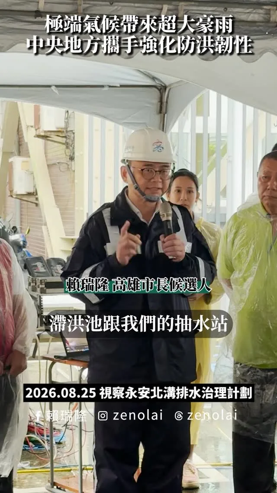
@zenolai:治水沒有終點，市民安全第一！
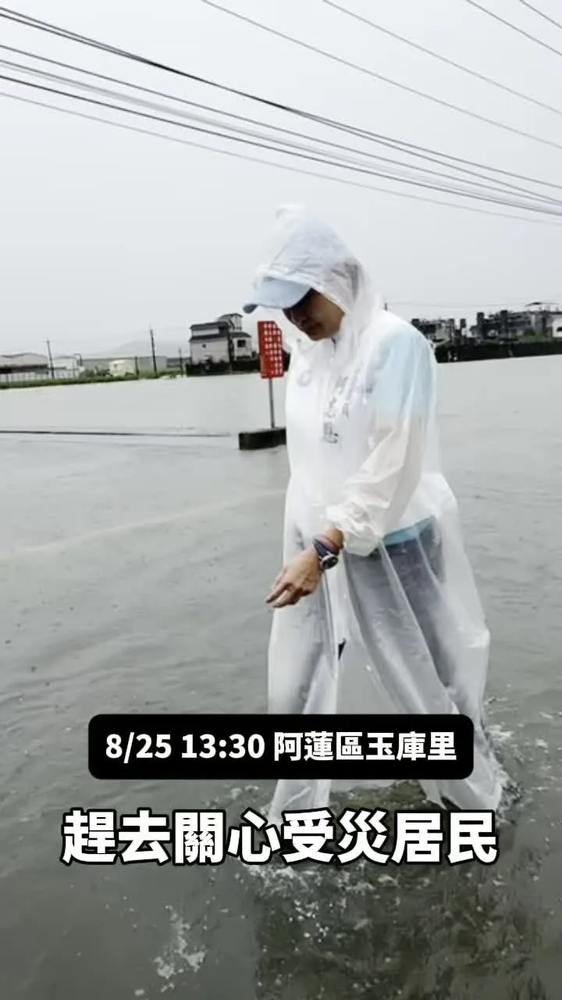
大雨滂沱，我依舊心繫鄉親。今天下午我趕往阿蓮區玉庫里，關心受災居民的災後復原狀況。
農業部公告高雄市「#魚塭養殖」全品相納入救助範圍！陪漁民一起度難關！ 高雄市在三天內降下全年1/3雨量的超大豪雨，讓農漁產業都大受影響。今早陪同 賴清德 總統勘災時，我也當面向總統爭取高雄漁業災損救助。感謝中央以最快速度回應高雄漁民的需求，分別提供受此次豪雨影響的漁民 #現金救助 及 #低利貸款 申辦，申請資訊如下： 🔺申請項目：「魚塭養殖」全品項 🔺受理地區：高雄市全區 🔺申請期間：8月26日至9月8日（假日照常受理） 🔺辦理地點：所在地公所 #申報項目損失率達20%以上的漁民朋友，請備妥身分證、印章、存摺、土地相關證明等文件，向 #所在地公所 申辦。有低利貸款需求者，請於10個工作日內先申請受災證明，以利後續辦理。

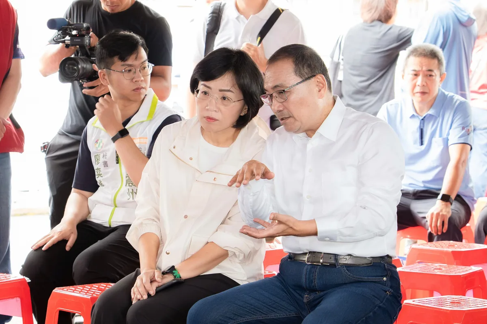
@su.chiaohui:中央全額補助4867萬元！升級新莊防洪能力！ 沙德爾颱風持續逼近，今天我和侯市長也一起到新莊的塔寮坑二抽水站，了解智慧防汛工程的完工情況。 感謝中央全額補助4867萬元、新北市府團隊大力施作，將塔寮坑二抽水站全面自動化，可以遠端監控、自動啟停，讓防汛工作更安全、更快速。 未來我們一起繼續努力，中央地方攜手合作，讓市民生活環境更好、更安全。